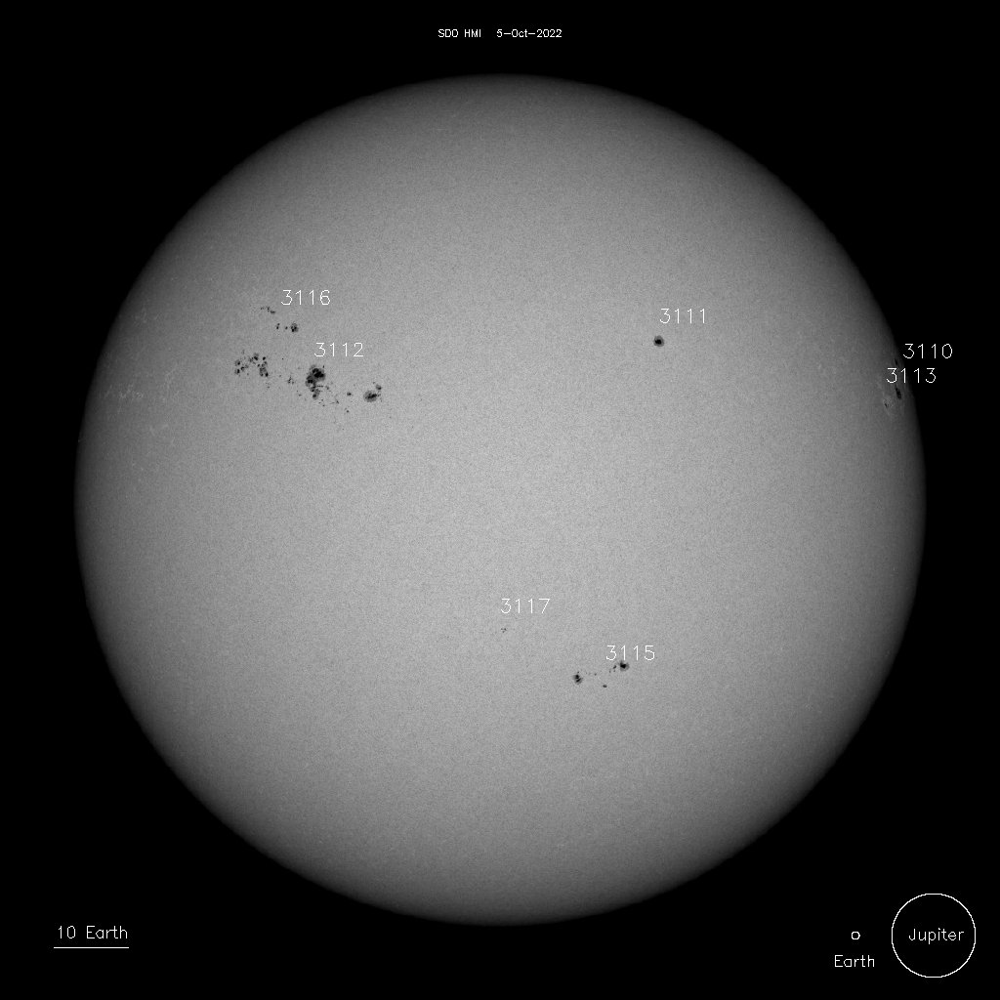

Sonnenflecken sind dunkle Stellen auf der Sonnenoberfläche. Sie sind kühler und strahlen weniger sichtbares Licht ab als der Rest der Sonnenoberfläche.
Sonnenflecken bilden das einfachste Maß für die Sonnenaktivität.
Die Häufigkeit der Sonnenflecken unterliegt einer Periodizität von durchschnittlich 11 Jahren.
Ursache der Sonnenflecken sind starke Magnetfelder, welche den Wärmetransport an die Sonnenoberfläche behindern.

6.1 Sonnenfleckenrelativzahl
Die Häufigkeit der Sonnenflecken wird durch die Relativzahl erfasst.
man zählt die Einzelflecken (Zahl \(f\)) und addiert dazu das Zehnfache der Gruppenanzahl (Zahl \(g\)).
Die Sonnenfleckenrelativzahl ist eine Maßzahl der Sonnenaktivität und berechnet sich aus
\[
R = k ( f + 10 g)
\]
wobei \(k\) ein vom Beobachter und seinen Instrumenten abhängiger Korrekturfaktor ist.
Wir wollen nun die aktuellen Daten visualisieren und analysieren. dazu nutzen wir einenDatensatz der Monatsmittelwerte der Sonnenfleckenrelativzahl von 1749 bis heute.